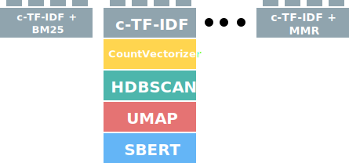
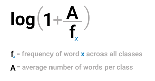
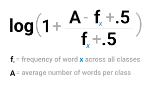
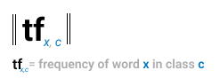
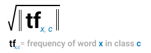

c-TF-IDF¶
In BERTopic, in order to get an accurate representation of the topics from our bag-of-words matrix, TF-IDF was adjusted to work on a cluster/categorical/topic level instead of a document level. This adjusted TF-IDF representation is called c-TF-IDF and takes into account what makes the documents in one cluster different from documents in another cluster:

Each cluster is converted to a single document instead of a set of documents. Then, we extract the frequency of word x in class c, where c refers to the cluster we created before. This results in our class-based tf representation. This representation is L1-normalized to account for the differences in topic sizes.
Then, we take the logarithm of one plus the average number of words per class A divided by the frequency of word x across all classes. We add plus one within the logarithm to force values to be positive. This results in our class-based idf representation. Like with the classic TF-IDF, we then multiply tf with idf to get the importance score per word in each class. In other words, the classical TF-IDF procedure is not used here but a modified version of the algorithm that allows for a much better representation.
Since the topic representation is somewhat independent of the clustering step, we can change how the c-TF-IDF representation will look like. This can be in the form of parameter tuning, different weighting schemes, or using a diversity metric on top of it. This allows for some modularity concerning the weighting scheme:

This class-based TF-IDF representation is enabled by default in BERTopic. However, we can explicitly pass it to BERTopic through the ctfidf_model allowing for parameter tuning and the customization of the topic extraction technique:
from bertopic import BERTopic
from bertopic.vectorizers import ClassTfidfTransformer
ctfidf_model = ClassTfidfTransformer()
topic_model = BERTopic(ctfidf_model=ctfidf_model )
Parameters¶
There are two parameters worth exploring in the ClassTfidfTransformer, namely bm25_weighting and reduce_frequent_words.
bm25_weighting¶
The bm25_weighting is a boolean parameter that indicates whether a class-based BM-25 weighting measure is used instead of the default method as defined in the formula at the beginning of this page.
Instead of using the following weighting scheme:

the class-based BM-25 weighting is used instead:

At smaller datasets, this variant can be more robust to stop words that appear in your data. It can be enabled as follows:
from bertopic import BERTopic
from bertopic.vectorizers import ClassTfidfTransformer
ctfidf_model = ClassTfidfTransformer(bm25_weighting=True)
topic_model = BERTopic(ctfidf_model=ctfidf_model )
reduce_frequent_words¶
Some words appear quite often in every topic but are generally not considered stop words as found in the CountVectorizer(stop_words="english") list. To further reduce these frequent words, we can use reduce_frequent_words to take the square root of the term frequency after applying the weighting scheme.
Instead of the default term frequency:

we take the square root of the term frequency after normalizing the frequency matrix:

Although seemingly a small change, it can have quite a large effect on the number of stop words in the resulting topic representations. It can be enabled as follows:
from bertopic import BERTopic
from bertopic.vectorizers import ClassTfidfTransformer
ctfidf_model = ClassTfidfTransformer(reduce_frequent_words=True)
topic_model = BERTopic(ctfidf_model=ctfidf_model )
Tip
Both parameters can be used simultaneously: ClassTfidfTransformer(bm25_weighting=True, reduce_frequent_words=True)